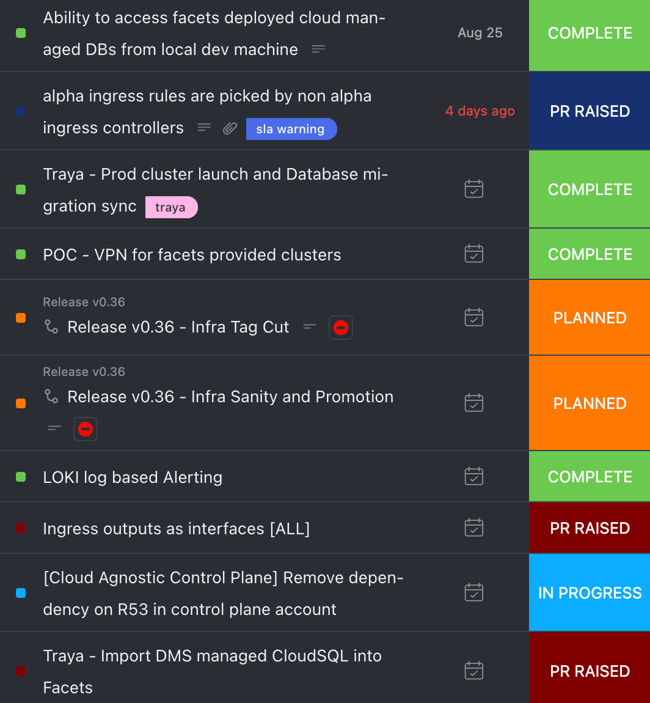

Demo Day
Sprint 37
04 Sep 2023
Tasks
[Aster CR] Ability to access facets deployed cloud managed DBs from local dev machine
generate_svc.py
import json def generate_yaml(name, ip): yaml_template = f''' --- apiVersion: v1 kind: Service metadata: name: {name} namespace: default spec: type: ClusterIP ports: - port: 3306 targetPort: 3306 --- apiVersion: v1 kind: Endpoints metadata: name: {name} namespace: default subsets: - addresses: - ip: {ip} ports: - port: 3306 ''' return yaml_template def main(): input_file = 'input.json' with open(input_file, 'r') as json_file: data = json.load(json_file) for env, services in data.items(): output_file = f'{env}_output.yaml' with open(output_file, 'w') as yaml_file: for name, ip in services.items(): yaml_content = generate_yaml(name, ip) yaml_file.write(yaml_content) print(f"Generated YAML content for '{env}' and saved to '{output_file}'") if __name__ == "__main__": main()
Generated svc and endpoint yaml - generated_svc.yml
Loki - Log based alerting
previously module.json looks like this
Now kind and flavor is updated to match how Loki calls it
Ingress outputs as interfaces
[Capillary CR] Alpha ingress rules are picked by non alpha ingress controllers
Below arg was missing in legacy deployment nginx container
{{- if (semverCompare ">=0.9.0-beta.1" .Values.controller.image.tag) }} - --controller-class=k8s.io/{{ .Release.Name }}-ingress-nginx {{- end }}